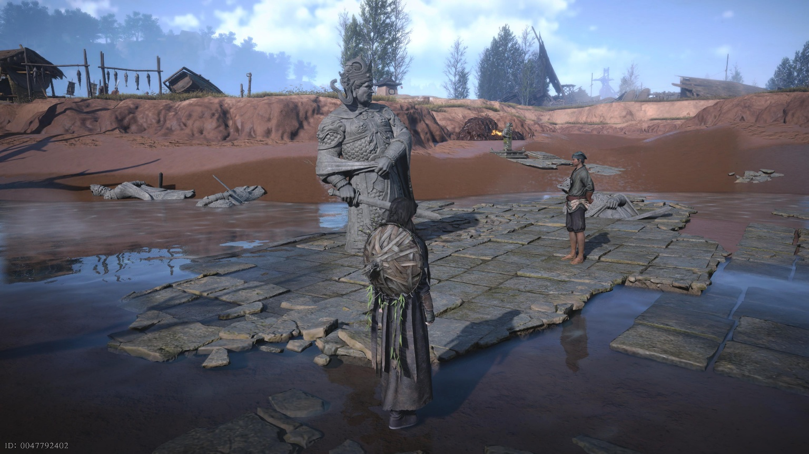
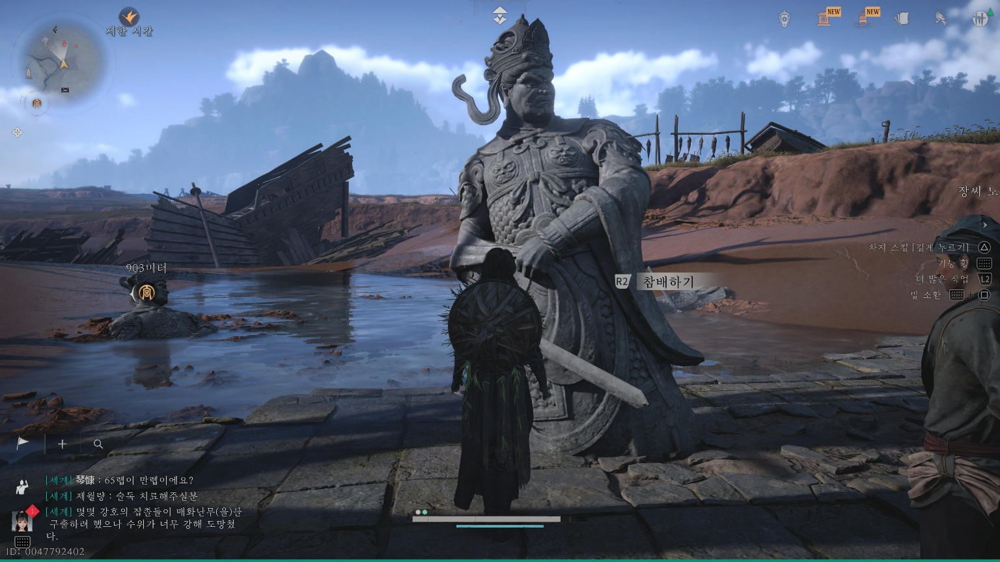
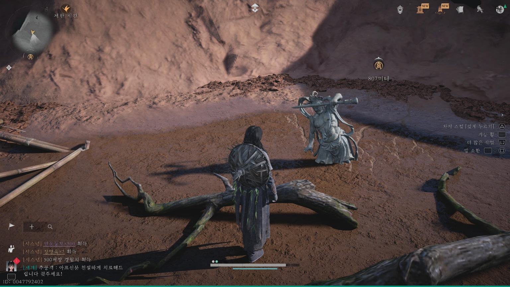
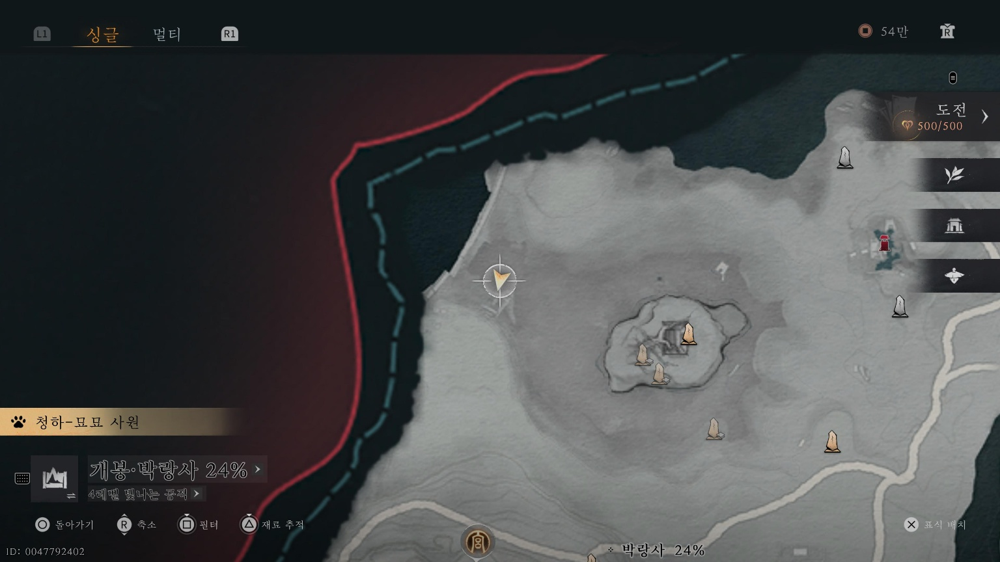
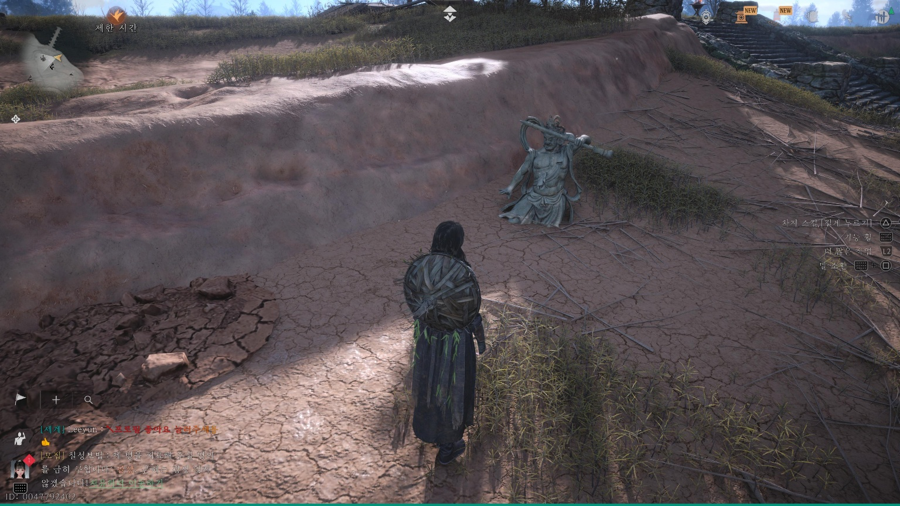
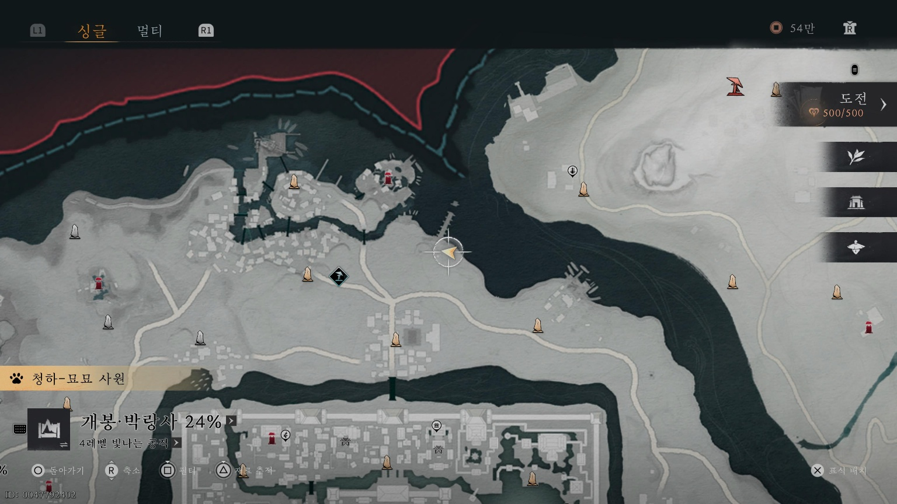
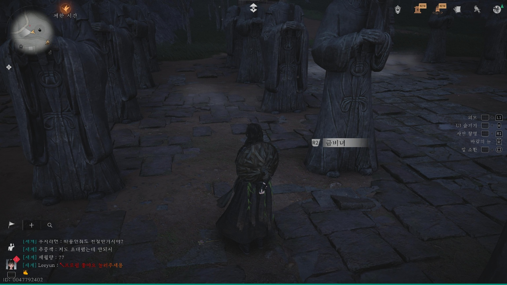
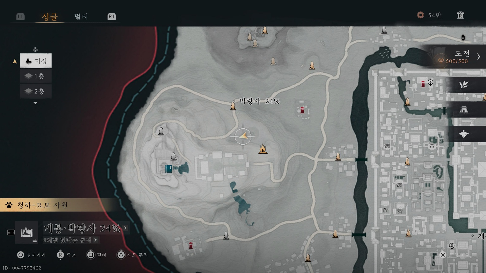

만사록
물귀신 할아버지
장씨 노인의 제사와 잃어버린 금비녀
📜 퀘스트 개요
백어강, 청구촌, 부의산을 오가며 곳곳의 석상에 참배하고, 잃어버린 금비녀를 찾아 장씨 노인에게 전달하는 순례 의뢰입니다.
1. 장씨 노인과 첫 번째 참배
백어강 천룡신고전 경계석 아래로 이동하여 장씨 노인과 대화하세요.
대화 후, 노인 바로 앞에 있는 석상에 [참배]를 올립니다.



2. 두 번째 참배 (백어강)
아래 지도에 표시된 위치로 이동하여 작은 석상을 찾으세요.
이곳에서도 [참배]를 수행합니다.


3. 세 번째 참배 (청구촌)
청구촌으로 이동하세요.
아래 장소에 있는 석상을 찾아 [참배]를 올립니다.


4. 네 번째 참배 및 금비녀 획득 (부의산)
부의산의 천애객(박랑사) 지역으로 이동합니다.
위쪽 조각상 사이를 조사하여 [금비녀]를 획득하세요.
그 후 앞에 있는 석상에 마지막 [참배]를 합니다.


5. 전달 및 완료
모든 참배를 마치고 금비녀를 찾았다면, 다시 백어강의 장씨 노인에게 돌아가세요.
대화 후 금비녀를 전달하면 퀘스트가 완료됩니다.